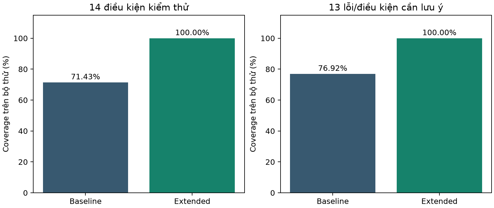
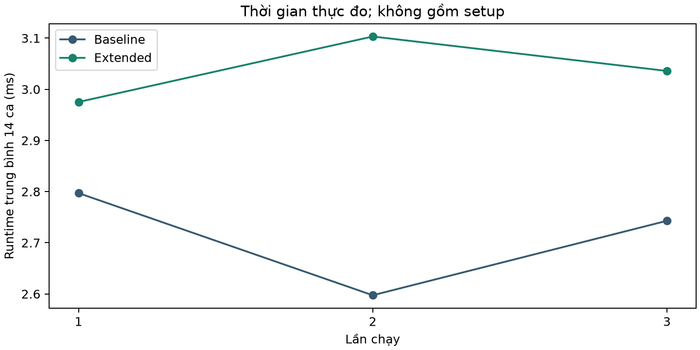

DT007 — Báo cáo khoa họcDT007 — Trình xác minh chuỗi chứng thư số và chính sách thuật toán
BÁO CÁO NGHIÊN CỨU VÀ THỰC NGHIỆM. Sinh viên: [điền họ tên, mã số và lớp]. Giảng viên: [điền tên]. Bản dự thảo kỹ thuật phục vụ rà soát; cần áp dụng mẫu trình bày chính thức của trường trước khi nộp.
Tóm tắt: DT007 kết hợp phân tích X.509, hostname, thời hạn, chuỗi chứng thư, thuật toán và đối chiếu metadata CT. Nghiên cứu mới có 114 quan sát qua 3 lần mỗi cấu hình, giữ nguyên 14 ca phòng kiểm thử và bổ sung 5 đối chứng hợp lệ. Baseline bỏ CT để khảo sát đóng góp module; Extended giữ CT. Mọi kết quả trong báo cáo lấy từ raw CSV/summary/evidence thực chạy, không từ số liệu mẫu.
Các kết quả xác nhận khả năng phát hiện điều kiện của bộ thử có kiểm soát, không đo xác suất website an toàn trên Internet. Chữ ký SCT/inclusion proof vẫn chưa xác minh; điều này không tự chứng minh SCT sai. Các giới hạn dữ liệu, đối chứng và khả năng suy rộng được trình bày cùng kết quả, thay vì che giấu bằng điểm số giao diện.
Kết quả kiểm thử tự động được ghi nhận: 426 tests, failures=0, errors=0. Ngày đo mới: 2026-10-10T06:47:16.246382+00:00. Tài liệu được dựng lại từ artifacts bằng experiments/build_scientific_report.py.
1. Vấn đề, phạm vi và câu hỏi nghiên cứu
Chứng thư số giúp liên kết khóa công khai với danh tính được CA chứng nhận. Việc giải mã được X.509 chưa đủ để kết luận tin cậy: tên miền, thời hạn, chữ ký, ràng buộc CA và nguồn điểm neo đều phải được kiểm tra. Chứng thư cuối chuỗi máy chủ gửi có thể chỉ là intermediate; root có thể được tìm trong trust store. DT007 tách những dữ kiện này trong engine và lớp trình bày.
RQ1: bổ sung đối chiếu CT metadata thay đổi coverage điều kiện thế nào? RQ2: runtime và tài nguyên tiến trình biến động qua các lần chạy thế nào? RQ3: đối chứng hợp lệ có bị báo FAIL và WARNING có nguyên nhân gì? Ba câu hỏi được trả lời trong phạm vi lab. Không có dữ liệu có nhãn độc lập trên toàn Internet để ước lượng accuracy thực tế.
Đóng góp gồm lab chứng thư có chữ ký thật, bằng chứng công khai cho đối chứng, CT ablation dùng cùng engine, phép đo tái lập và giao diện giải thích tiếng Việt. Không xây evaluator PASS/FAIL riêng cho Demo. Không có database, đăng nhập, mô hình học máy hoặc dashboard quản trị; những thành phần này không giải quyết câu hỏi nghiên cứu đã xác định.
2. Bài báo nền và xác minh thư mục
Karl Grindal, Milton Mueller, Vagisha Srivastava: Non-governmental governance of trust on the internet: WebPKI as public good. Journal of Cybersecurity 11(1), tyaf018, DOI 10.1093/cybsec/tyaf018; Crossref xác nhận ngày trực tuyến 07/08/2025. Metadata gốc và checksum lưu trong research_sources/20261010.
Oxford About ghi JIF 2025 và thứ hạng 14/275 ở Social Sciences, Interdisciplinary. Thứ hạng thuộc 25% đầu, là cơ sở suy ra Q1 ở category/năm này; chưa có bản xuất trực tiếp JCR hoặc bằng chứng SCImago tương ứng. Không nhầm tạp chí với Cybersecurity của nhà xuất bản khác.
Bài báo giải thích cơ chế quản trị tin cậy, không cung cấp bộ quy tắc verifier để sao chép. DT007 tái lập một nguyên mẫu kỹ thuật liên quan và xây nghiên cứu CT ablation riêng. Không gọi coverage lab là kết quả tái lập thống kê thị phần hay quản trị trong bài báo.
3. Phương pháp, dữ liệu và metric của nghiên cứu nền
Cập nhật kiểm chứng 10/10/2026: Crossref xác nhận DOI, tạp chí, ngày online;
Oxford About ghi JIF 2025 rank 14/275 ở Social Sciences, Interdisciplinary.
Thứ hạng thuộc 25% đầu; đây là suy luận Q1 từ nguồn nhà xuất bản, chưa là
bản xuất JCR trực tiếp/SCImago. Chi tiết và giới hạn phiên bản bài đọc tại
research_sources/verification.md; không dùng dòng “chưa xác nhận” ở đầu
phiếu như thể chưa tra cứu gì.
Bài báo nghiên cứu vì sao và bằng cách nào các tác nhân phi chính phủ hợp tác để duy trì cơ chế xác thực website WebPKI như một lợi ích công. Phương pháp chính là phân tích thể chế, gồm (1) xác định lợi ích chung cần hành động tập thể; (2) xác định tác nhân và xung đột lợi ích; (3) xác định các quy tắc/thực hành được chấp nhận tạo nên cân bằng thể chế. Đây không phải bài báo đề xuất thuật toán kiểm tra chứng thư mới.
Bằng chứng được tác giả sử dụng gồm: biên bản họp CA/B Forum; 10 phỏng vấn bán cấu trúc với người tham gia có mức độ hoạt động cao; các ballot/voting; mẫu URL từ Common Crawl để ước lượng thị phần CA; so sánh browser root stores và mức độ áp dụng CT. Nghiên cứu dùng cả định tính và định lượng.
- Biên bản họp, thành viên và mức tham gia CA/B Forum; kết quả bỏ phiếu.
- Chứng thư thu thập từ mẫu URL; phân bố CA; thành phần root store.
- Chỉ số đánh giá hiệu lực thể chế: kết quả bỏ phiếu, mức độ áp dụng HTTPS/CT, sự hội tụ root stores, số lượng CA và phát hiện/cải thiện xử lý chứng thư cấp sai.
Không được viết rằng bài báo gốc báo cáo accuracy/coverage của 14 ca kiểm thử DT007: đó là phép đo mới do nhóm xây dựng.
Bản tác giả đọc được tại UTD; PDF xuất bản chính thức không lấy được qua công cụ hiện tại. Việc đối chiếu chi tiết phiên bản xuất bản còn cần hoàn tất trước nộp. Không chèn số liệu gốc chưa kiểm chứng vào bảng thực nghiệm DT007; hai nghiên cứu có đơn vị quan sát và mục đích khác nhau.
4. Hạn chế và khoảng trống chuyển sang nguyên mẫu
Đây là các hạn chế và khoảng trống cần xử lý khi chuyển từ nghiên cứu WebPKI thể chế sang nguyên mẫu kỹ thuật DT007, không phải tất cả đều là tuyên bố nguyên văn của tác giả.
1. Khác biệt mục tiêu nghiên cứu: bài báo đánh giá quản trị WebPKI, DT007 kiểm tra chứng thư. Không thể gọi thí nghiệm DT007 là tái lập toàn bộ kết quả bài báo.
2. Thiên lệch mẫu quan sát: mẫu URL trong nghiên cứu có những website không truy xuất được chứng thư trong thời gian giới hạn; việc lấy mẫu live website cho DT007 cũng gặp timeout và thiên lệch truy cập.
3. Khác biệt trust store: các browser/OS có tập root khác nhau; một trust store cục bộ không đại diện cho tất cả trình duyệt.
4. Giới hạn dữ liệu CT: Google CT Log List là metadata về log, không phải chứng cứ chữ ký SCT/inclusion proof hợp lệ; chỉ đối chiếu log ID không thể xác nhận toàn bộ CT.
5. Khác biệt giữa chứng thư và website: chứng thư hợp lệ không xác minh danh tính thương mại hay tính an toàn của nội dung website.
6. Độ biến động theo thời gian: chứng thư và trạng thái CT Log thay đổi; phải chốt snapshot và ghi thời điểm quan sát.
7. Giới hạn thực nghiệm offline: chứng thư tổng hợp có ground truth rõ nhưng không đại diện cho phân bố lỗi WebPKI ngoài Internet.
Các hạn chế này là phân tích áp dụng cho DT007, không tất cả là kết luận nguyên văn của tác giả. Đặc biệt, tập URL live và tập chứng thư tổng hợp không thay thế dữ liệu biên bản/phỏng vấn của nghiên cứu nền. Mọi suy luận từ hiệu lực quản trị sang trạng thái an toàn kỹ thuật cần bằng chứng riêng.
5. Threat model và ranh giới tin cậy
- Tài sản: tính xác thực tên miền, chuỗi tin cậy CA, tính đúng đắn chính sách mật mã, kết luận CT, tính toàn vẹn kết quả báo cáo.
- Đối tượng/rủi ro: chứng thư hết hạn/chưa hiệu lực, sai SAN, khóa yếu, chữ ký yếu/sai, intermediate không phải CA, root không đáng tin, metadata SCT không khớp.
- Ranh giới tin cậy: website TLS công khai; OS trust store; Google CT Log List snapshot; chính sách JSON; fixtures X.509 cục bộ; ứng dụng Flask hiển thị kết quả.
- Không nằm trong phạm vi: an toàn nội dung website, mã độc, phishing, DNSSEC, OCSP/CRL đầy đủ, chữ ký SCT và inclusion proof thực, mức độ tuân thủ đầy đủ mọi browser CT policy.
- Kiểm soát: không gửi khóa riêng lab ra ngoài; chỉ dùng domain public cho live scans; lưu checksum của dữ liệu và code; tách ERROR/SKIPPED khỏi FAIL; không coi WARNING của công cụ là website mất an toàn.
Đầu vào không được tin cậy: tên miền, chứng thư do máy chủ gửi, metadata CT và form Demo. Trust anchors phải đến từ store độc lập, không tự nâng chứng thư máy chủ gửi thành điểm tin cậy. Form Demo chỉ nhận ID trong allowlist; không nhận đường dẫn hay lệnh hệ thống. Flask bind localhost, debug tắt; không triển khai nguyên mẫu như dịch vụ quét công khai.
Engine fail closed khi thiếu kiểm tra thiết yếu; dữ liệu CT không đủ được phân biệt với lỗi mật mã. HTML escape tên miền, chủ thể và chi tiết gốc để không biến dữ liệu chứng thư thành mã script. Không xuất private keys lab. Chỉ quét thông tin TLS công khai, không đăng nhập, không khai thác, không lấy nội dung riêng tư.
6. Hồ sơ dữ liệu Google CT Log List
Snapshot version 93.6; timestamp 2026-10-06T13:36:54Z; 10 đơn vị vận hành; tổng 69 logs gồm {'logs': 26, 'tiled_logs': 43}. Đây là metadata CT Log, không phải corpus chứng thư TLS được gán nhãn lỗi. Không được dùng tổng số log để làm mẫu số FP/FN của verifier.
Nguồn định danh: https://www.gstatic.com/ct/log_list/v3/log_list.json. File được giữ nguyên, profiler và validator không cập nhật snapshot. Thời điểm tải gốc không được ghi; thời điểm tạo profile không phải ngày acquisition. Các thực nghiệm lab dùng metadata giả lập có cấu trúc đã ghi rõ, không giả rằng đang ký SCT bằng khóa của Google CT Log.
SHA-256 snapshot: d0da723b9957e4f74f024278e7311c422e09b6c6452c8457c8dbf9a29f2817b9. Hash phục vụ tái lập và phát hiện sửa file, không tự chứng minh chữ ký nhà phát hành. Phân bố trạng thái:
Các URL/key/log_id được giữ để phân tích. Với tiled_logs, submission_url và monitoring_url có vai trò khác url của logs RFC6962; analyzer hỗ trợ cả hai loại, không ép cấu trúc tiled thành RFC6962.
7. Schema, chất lượng và điều khoản dữ liệu
Schema chính thức v3 được lưu độc lập. Kết quả: 0 lỗi schema, 0 lỗi key; 69 public keys parse DER và Log ID khớp SHA256 SPKI. Kiểm tra datatype/format và định danh được thực hiện lại bằng jsonschema và cryptography, không lấy count hard-code để kết luận hợp lệ.
Không có detached signature đúng snapshot, nên publisher signature vẫn NOT_VERIFIED. Schema hợp lệ không chứng minh dữ liệu đúng ở thời điểm scan. Danh sách có thể đổi mỗi ngày; nghiên cứu cần chốt snapshot, còn kết luận operational cần hiểu độ mới và chính sách trạng thái. Dataset không cung cấp mọi lịch sử trạng thái.
Chrome CT Log Lists có Acceptable Use Policy riêng: nghiên cứu hệ sinh thái và CT enforcement trong TLS clients không có cùng điều kiện sử dụng. Quyền tái phân phối snapshot chưa xác nhận; không áp dụng giấy phép Apache của repository khác cho JSON gstatic. Khi đóng gói nộp cần kèm nguồn/điều khoản và xác nhận hình thức phân phối phù hợp.
8. Kiến trúc và bảo toàn chức năng
CLI và Flask dùng cùng certificate_security pipeline. Service tạo view model, presentation dịch trạng thái và giải thích, không đánh giá lại engine để đổi verdict. Phòng kiểm thử gọi SyntheticLab theo manifest, có kết quả actual mới mỗi lần; CSV download xuất snapshot đã chạy, không làm nguồn actual.
Phân chia module giúp kiểm thử độc lập: fetcher kiểm tra TLS và lấy chuỗi; parser/crypto_info đọc X.509; validators trả dữ liệu có cấu trúc; evaluator tổng hợp; export serialize cùng kết quả. Baseline chỉ đổi cờ include_ct=False trong nghiên cứu, mặc định Web/CLI vẫn bật CT. Không thay policy để làm ca thử khớp.
14 ca, file synthetic_cases.py và dữ liệu cũ được bảo toàn. Bổ sung nghiên cứu ở module riêng; artifacts mới nằm trong thư mục mới. Theo dõi checksum mã nguồn/config tại thời điểm đo, không so fingerprint RSA giữa lần vì khóa/serial thực được sinh ngẫu nhiên.
9. Chuỗi chứng thư và điểm neo tin cậy
Leaf là chứng thư đích; intermediate phát hành chứng thư khác; root tự ký không tự động đáng tin; trust anchor là điểm tin cậy được store độc lập cấp. Một intermediate có thể là anchor được tin cậy trực tiếp. Không gán nhãn root chỉ vì là phần tử cuối chuỗi TLS.
Validator xác minh issuer/subject, chữ ký thật, CA BasicConstraints, keyCertSign nếu có, thời hạn, chu kỳ, path constraints bằng OpenSSL, và fingerprint anchor. Chuỗi thiếu root có thể được hoàn tất từ store; nếu không hoàn tất đường dẫn độc lập thì trust FAIL. Chứng thư thêm từ store được UI ghi nguồn, tách chuỗi máy chủ đã gửi.
PARTIAL_CHAIN chỉ có ý nghĩa với anchor từ store độc lập; không biến CA không được tin cậy thành anchor. Một root được máy chủ gửi vẫn là dữ liệu untrusted cho tới khi store xác nhận. Không tải AIA hay kiểm tra OCSP/CRL hiện tại; các giới hạn này được ghi, không được diễn giải chain PASS như kiểm tra toàn bộ trạng thái thu hồi.
10. Sửa lỗi EKU/KU cho mục đích TLS
Trong rà soát, bốn negative tests cho thấy X509StoreContext ở purpose mặc định chấp nhận đường dẫn có EKU chỉ clientAuth hoặc KU leaf không cho sử dụng TLS. Kết nối SSL thật có kiểm tra purpose; validator offline chưa có, nên hai đường vào có thể khác nhau trên thuộc tính này.
Đã bổ sung kiểm tra extension hiện diện trên chuỗi bằng cryptography public API. EKU phải cho serverAuth, anyExtendedKeyUsage hoặc SGC tương thích. KU leaf phải cho ít nhất digitalSignature/keyEncipherment/keyAgreement. Extension thiếu không bị tự coi là lỗi. TLS usage FAIL kéo trust FAIL và không xuất trust_anchor đã xác minh.
Bốn test ban đầu FAILED và ba positive controls PASS; sau sửa 7/7 PASS. Nhóm chain/provenance có 33 tests PASS ở lần kiểm tra liên quan. Lý do dịch tiếng Việt, nguyên bản giữ trong chi tiết kỹ thuật. Không tuyên bố đã hiện thực mọi extension lịch sử/purpose của OpenSSL; không thay CT hoặc policy. Thực nghiệm được chạy lại sau sửa.
11. Tên miền, thời hạn và xử lý lỗi
Hostname được chuẩn hóa/kiểm tra trước network, SAN là nguồn tên miền bảo vệ. Form chỉ nhập DNS/IP, không URL hoặc path; server validate lại dù browser có kiểm tra. Thời hạn dùng datetime có timezone, phân biệt VALID, EXPIRED và NOT_YET_VALID; đồng hồ cố định dành cho lab, đồng hồ thật dành cho scan.
Timeout/DNS/TLS/certificate parsing không thành kết luận chứng thư an toàn. UI trả thông báo tiếng Việt, không lộ traceback. Thiếu policy/chain/validity là lỗi thiết yếu và fail closed; CT dataset không đủ là WARNING với giới hạn cụ thể. Không chuyển WARNING thành PASS để đạt kết quả demo đẹp.
HTTP thật đã kiểm tra input sai 400, body quá lớn 413, homepage/demo/scan hợp lệ 200. Edge headless thêm 13 checks đạt về loading, score, timeline, accordion, Demo/CSV và viewport 390px. Screenshots/summary được lưu; chưa kiểm tra clipboard OS hoặc điện thoại vật lý. Không dùng HTTP/viewport emulation để tuyên bố mọi thiết bị đều đạt.
12. Chính sách thuật toán và kiểm tra mật mã
Policy lấy từ config/algorithm_policy.json, không cố định số liệu hay đổi rule theo hostname. RSA tối thiểu 2048, EC tối thiểu 256; các thuật toán/hash cho phép hoặc chặn được khai báo ngoài engine. Danh sách blocked ưu tiên allowed; policy thiếu/sai không ngầm PASS.
Chữ ký chứng thư và chính sách thuật toán là hai câu hỏi khác nhau: signature có thể verify bằng SHA-1 nhưng hash vẫn bị chặn. Ba ca RSA1024/SHA1/MD5 kiểm tra policy isolation; không coi kết quả riêng này là full chain/CT. SHA1/MD5 được tạo thật và verify fixture bằng backend trước đánh giá policy, không giả CryptoInfo.
Đối chứng Ed25519 là public key của leaf; certificate vẫn được issuer RSA ký SHA256. Không nhập nhằng thuật toán khóa và thuật toán chữ ký. Thuật toán signature, OID, hash, key type/key size hiển thị riêng. Chưa tuyên bố policy cục bộ tương đương mọi yêu cầu WebPKI của browser.
13. Certificate Transparency và diễn giải thời gian
Google temporal_interval áp dụng cho NotAfter chứng thư thuộc shard, không phải khoảng thời điểm phát hành SCT. Ca hồi quy cố ý đặt SCT trước start nhưng NotAfter trong khoảng; matcher phải không kết luận lỗi SCT vì phép so sánh sai trường thời gian. Thiếu trường optional không tự là SCT invalid.
Tách Log ID không khớp, state cần xem xét/bị từ chối, thiếu dữ liệu, signature NOT_VERIFIED và inclusion NOT_VERIFIED. Retired cần xem SCT có trước thời điểm retirement; snapshot thiếu lịch sử không đủ suy luận chính sách Chrome hoàn chỉnh. Chỉ khớp Log ID không chứng minh chữ ký SCT hợp lệ.
Giới hạn mật mã được gom cùng nguyên nhân ở phần vấn đề phát hiện nhưng giữ chi tiết mỗi SCT. CT matched usable với NotAfter phù hợp vẫn WARNING do chưa verify signature/inclusion. Điểm UI không phải xác suất an toàn; 90/100 không có nghĩa website thiếu 10% an toàn. Kết quả Web/CLI của google.com/github.com/cloudflare.com mới đều WARNING, không bị thay đổi để trình bày đẹp.
14. Thiết kế Baseline/Extended và tái lập
Nghiên cứu hiện tại: 3 lần × hai cấu hình × (14 ca + 5 loại đối chứng) = 114 quan sát. Config và nhãn đóng băng trước thực thi. Thứ tự profile và ca được random theo seed, nhưng RSA keys/serial không tất định. Profiles dùng chứng thư khác bytes có cùng thuộc tính, không phải paired input byte-identical.
Baseline giữ hostname/validity/chain/algorithm, bỏ CT bằng cờ evaluator. Extended giữ các thành phần và thêm SCT parsing/CT metadata. Đây là ablation do nhóm thiết kế, không thay engine hoặc tạo quy tắc actual riêng. Setup tạo khóa/lab đo riêng; wall mỗi ca gồm sinh fixture và validators, controls còn gồm oracle.
Không có train/test ML vì công cụ dùng quy tắc. Leakage có thể xảy ra nếu sửa policy/expected sau khi xem actual, nên giữ manifest/hash và ghi mismatch. Tập thử mất cân bằng, số kiểu control ít; không gọi nhiều lần sinh khóa là nhiều mẫu tình huống hoàn toàn mới. Live sites là quan sát công khai, không nhãn an toàn đã được audit.
15. Bảy ca đầu: phạm vi và bằng chứng
Các ca chứng thư được tạo X.509 thật, serialize/parse DER rồi chạy validators. Thời hạn trước/sau clock, SAN không khớp hoặc key/hash yếu là thuộc tính đầu vào đã định trước. Ba ca policy isolation dùng đường kiểm tra riêng có ghi rõ module; các ca khác dùng pipeline tổng hợp.
Kết quả FAIL của chứng thư lỗi và kết quả kiểm thử thành công là hai khái niệm: test thành công khi actual đúng kỳ vọng và phát hiện điều kiện khảo sát. Signature placeholder của SCT không được dùng để tuyên bố CT mật mã hợp lệ. Khi backend không tạo được thuật toán legacy, ghi SKIPPED thay vì fake kết quả.
16. Bảy ca sau và hồi quy CT
Chữ ký sai được tạo bằng signer khác nhưng issuer text vẫn đúng, nên không thể phát hiện chỉ bằng so sánh chuỗi ký tự. Intermediate CA=False, leaf tự ký và CT log/state không phù hợp khảo sát module khác nhau. Hồi quy temporal_interval là điều kiện không được báo lỗi sai, không phải lỗi bảo mật thứ 14.
Demo dùng ID allowlist trong manifest, gọi lại SyntheticLab. Batch giữ kết quả riêng từng ca và hiển thị mismatches; không dùng results.csv hay expected_status làm actual. ERROR không được tự tính là FAIL đúng kỳ vọng. Dữ liệu giả lập được gắn nhãn rõ, không gán cho website thật.
17. Đối chứng hợp lệ và nguồn nhãn
Năm đối chứng bổ sung có thuộc tính khai báo trước, root CA lab tin cậy độc lập với dữ liệu engine. Trước engine, một lần OpenSSL store verification và đọc trực tiếp dates/SAN/constraints/hash/key size xác nhận nhãn. Oracle không lấy actual/expected engine, nhưng chia sẻ backend OpenSSL; giới hạn này khác kiểm chứng bằng một triển khai mật mã độc lập.
PEM leaf/anchor công khai lưu trong evidence, không có private keys. Baseline kỳ vọng PASS; Extended kỳ vọng WARNING do không có SCT, không phải chứng thư sai. Ba lần mỗi loại tạo 15 đối chứng trên mỗi profile nhưng chỉ 5 tình huống kiểm soát; không dùng 0/15 để khẳng định FPR Internet bằng 0.
Controls được đặt ở module nghiên cứu riêng; danh sách phòng kiểm thử vẫn 14 ca. Không chèn chứng thư đối chứng vào Google CT dataset. Runtime controls gồm sinh khóa mới, nên được tổng hợp riêng với 14 ca sử dụng key material lab.
18. Định nghĩa và mẫu số metrics
Coverage điều kiện = số loại khớp kỳ vọng VÀ detected / 14 loại theo kế hoạch. Coverage lỗi/cần lưu ý loại hồi quy temporal_interval khỏi mẫu số, còn 13. Errors/skips không bao phủ được điều kiện, vẫn nằm trong mẫu số coverage. Agreement là khớp trạng thái, không đồng nghĩa detected và không phải accuracy Internet.
Positive theo phép đo FN là ca hoàn thành có expected duy nhất FAIL; có 12 mỗi lượt. FN là actual khác FAIL trong tập này. NO_SCT và hồi quy SCT kỳ vọng WARNING không nằm trong mẫu số FN. FP là đối chứng hợp lệ hoàn thành bị gán FAIL; warnings báo riêng. Không tính lỗi thực thi như kết luận âm hợp lệ.
FP/FN gộp là tổng số quan sát; rate gộp cần chia tổng mẫu số completed. Trung bình rate từng lượt chỉ bằng rate gộp khi mẫu số bằng nhau. Ba lượt cùng loại fixture có tương quan, nên tổng 36 ca dương không đại diện 36 loại lỗi độc lập. CPU/RAM/runtime đều có đơn vị và ranh giới đo được ghi cùng bảng.
19. Kiểm chứng số đo lịch sử
Audit độc lập kiểm chứng 90 quan sát cũ, 3 lần: verified=True, 0 sai lệch. Đối chiếu expected với config đóng băng, uniqueness ID/profile/repeat, boolean strict, từng lượt, aggregates và FP/FN. Không sửa raw CSV để khớp summary.
Baseline 10/14 = 71,428571%; coverage trên 13 mục = 76,923077%. FN=6 do UNKNOWN_CT_LOG và RETIRED_CT_LOG bị bỏ qua mỗi lượt: 2 × 3. Extended 14/14, FN=0. FP=0/3 controls mỗi profile trong nghiên cứu cũ, ít hơn controls nghiên cứu mới. Hai artifact không được nhập nhằng mẫu số.
Báo cáo cũ gọi 14 loại lỗi là không chính xác về thuật ngữ; audit sửa nghĩa trong tài liệu riêng, không thay đo lịch sử. Audit xác nhận phép tính từ recorded detected, không oracle độc lập cho mọi ca. raw_sha256 nằm trong metrics_audit/audit.json, có test bảo toàn bytes trước/sau audit.
20. Kết quả mới và ablation CT
Bảng dưới lấy trực tiếp từ summary sau sửa TLS usage. Coverage Extended cao hơn theo điều kiện được thiết kế cho module CT; không chứng minh tỷ lệ cải thiện trên phân bố lỗi ngoài thực tế. Hai FN/lượt Baseline là CT log unknown/retired. Các lỗi không CT giữ khả năng phát hiện ở cả hai profile.
FP=0 trên controls được khảo sát; chưa có FP trong bộ này không có nghĩa không tồn tại false positive khác. NO_SCT và SCT regression tạo WARNING được diễn giải riêng. Thực nghiệm live+synthetic bổ sung ba lần, mỗi lần 19/19 khớp, nhưng website thực chỉ có nhãn quan sát normal case.
Tất cả actual đến từ engine mới thực thi. Không dùng biểu đồ kết quả mẫu trong addon. Nhãn/thời điểm/chính sách/code hashes, raw CSV, JSON evidence và execution.log cho phép đối chiếu từng hàng với phép đo tổng hợp.

21. Runtime và biến động
Runtime 14 ca báo mean theo lượt; biểu đồ trình bày cả ba lượt thay vì chỉ số trung bình. Khoảng t95 dùng df=2, không mặc nhiên hợp lệ trên n nhỏ. Run mới sinh khóa/fixtures mới, có scheduler và order effect. Không khẳng định độ chênh mean là khác biệt có ý nghĩa thống kê.
Lượt mở rộng trước sửa TLS cho Extended thấp hơn; lượt sau sửa cho thứ tự khác. Điều này minh họa nhiễu timing và chi phí fixture, không bằng chứng thêm CT làm nhanh hơn. Runtime controls tách riêng vì sinh RSA3072/EC/Ed key trong từng ca và chạy oracle. Setup root/intermediate/shared keys cũng tách khỏi wall mỗi ca.
Đối chiếu runtime từng dòng CSV nếu phát hiện outlier; không loại hoặc sửa số đo để đẹp. Đối với deployment, cần benchmark lặp nhiều hơn, paired serialized inputs, warm-up và đo riêng validation; nghiên cứu này chỉ chứng minh pipeline vận hành và ghi chi phí lab trên máy hiện tại.

22. CPU, RAM và giới hạn phép đo
CPU time đo bằng process_time tại ranh giới ca, là tổng thời gian xử lý của tiến trình; không phải phần trăm CPU máy. Các ca ngắn có thể bị lượng tử hóa bởi timer Windows. Tổng CPU có thể khác wall vì I/O, scheduling và độ phân giải. Không suy hiệu quả CPU của module CT từ tổng gồm sinh khóa của controls.
RAM đo working set trước/sau qua Windows GetProcessMemoryInfo. process_peak_rss là high-water mark của tiến trình, không đỉnh của mỗi ca. RSS boundary max chỉ là giá trị lớn nhất tại điểm lấy mẫu; không đảm bảo bắt transient peak. Bộ nhớ allocator/cache tích lũy có thể làm lượt sau tăng RSS dù workload tương tự.
Cấu hình CPU/core/RAM thật và dependency lock được lưu riêng. Không lấy dung lượng RAM máy làm RAM tiêu thụ của engine. Để đo peak theo module cần tiến trình riêng hoặc sampling đủ tần suất và đánh giá observer overhead; chưa triển khai trong nghiên cứu hiện tại.
23. Độ ổn định, CI và khả năng suy rộng
Mean, SD mẫu n−1, min/max và CV mô tả ba repeat. Khoảng t95(mean) = mean ± 4,302653 × SD/√3 chỉ khi có đúng ba lượt, giả định independent repeat means và gần chuẩn. Chưa kiểm định được giả định với n=3; báo khoảng để minh bạch độ biến thiên, không dùng như kiểm định thắng/thua.
Coverage các fixture giống nhau nên SD có thể 0, khoảng [100,100]. Đó là kết quả ổn định trên điều kiện chốt, không phải confidence interval cho population. Tương tự 0 FP trên controls lặp không đủ suy ra độ đặc hiệu ngoài lab. Không báo tỷ lệ khớp như độ chính xác hệ thống khi thiếu độc lập ground truth.
Ablation CT là hợp lý để kiểm chứng thành phần tăng khả năng khảo sát log ID/state/no SCT. Chưa làm ablation làm yếu hostname/chain/policy vì không cần cho câu hỏi nghiên cứu và dễ bị hiểu nhầm như cấu hình an toàn. Nếu khảo sát thêm phải ghi rõ cấu hình nghiên cứu, không thay mặc định sản phẩm.
24. Kiểm thử, đầu ra và hướng dẫn tái lập
Suite cuối lấy từ JUnit XML: 426 tests; failures 0; errors 0; skipped 0. Tests bao phủ parsing, hostname/time, chain/signature/anchor/TLS purpose, CT thiếu dữ liệu/time semantics, policy, Flask invalid/service exception, demo single/batch/errors/export, audit và research controls.
Windows PowerShell: tạo/activate .venv; cài requirements-lock.txt cho môi trường đã đo, hoặc requirements-research.txt để giải dependencies lại. Dùng python/py trong venv. Chạy pytest với basetemp riêng và no:cacheprovider. Nghiên cứu mới phải chọn output directory trống để bảo toàn evidence; seed cố định order, không cố định keys.
CLI không tham số phân tích Google dataset; CLI hostname kiểm tra TLS. --json/--html xuất cùng engine, không fetch lại hoặc đổi trạng thái. Web localhost:5000 giữ real scan và phòng kiểm thử; HTML report độc lập mở được trong browser. Edge headless xác minh spinner và viewport, chưa ghi clipboard OS hay kiểm tra điện thoại vật lý; người dùng cần rà môi trường bảo vệ thực.
25. Đối chiếu yêu cầu, giới hạn còn lại và kết luận
Bảng đối chiếu chi tiết nằm trong requirements_traceability.md, dẫn mỗi yêu cầu tới mã và evidence. Các thành phần kỹ thuật, lab, metrics và tài liệu có thể rà soát. Chưa tuyên bố hoàn thành 100%: cần xác nhận cơ sở Q1 giảng viên chấp nhận, quyền phân phối snapshot, acquisition/chữ ký nguồn nếu yêu cầu, định dạng báo cáo trường, thông tin tác giả và video bảo vệ.
Giới hạn chính: không OCSP/CRL/AIA; không full SCT signature/inclusion; không audited Internet ground truth; fixtures chưa đại diện mọi certificate path/purpose; chỉ ba lượt và năm control types; oracle chia sẻ OpenSSL; memory boundary sampling. Các giới hạn không bị che bằng WARNING→PASS hoặc điểm số UI.
Kết luận trong phạm vi đo: pipeline phát hiện các điều kiện được khảo sát, CT ablation giải thích khác biệt coverage và FN, exports giữ security result. Lỗi EKU/KU offline được tái hiện và sửa bằng regression tests. Hướng mở rộng hợp lý là oracle đa triển khai, bộ chứng thư public có nhãn, đo validation trên inputs byte-identical và xác minh CT mật mã thực, với điều kiện nguồn/giấy phép rõ.
26. Tài liệu tham khảo và chỉ mục bằng chứng
[1] Grindal, Mueller, Srivastava (2025). DOI https://doi.org/10.1093/cybsec/tyaf018. Metadata: https://api.crossref.org/works/10.1093/cybsec/tyaf018. Bản tác giả UTD liên kết trong research_sources/verification.md.
[2] Oxford, Journal of Cybersecurity About: https://academic.oup.com/cybersecurity/pages/About. Thứ hạng theo năm/category, không đồng nhất JCR/SJR/CiteScore.
[3] GoogleChrome CertificateTransparency log_lists.md: https://github.com/GoogleChrome/CertificateTransparency/blob/main/log_lists.md. Schema: https://www.gstatic.com/ct/log_list/v3/log_list_schema.json.
[4] OpenSSL verification options: https://docs.openssl.org/3.5/man1/openssl-verification-options/. RFC5280: https://www.rfc-editor.org/rfc/rfc5280. RFC6962: https://www.rfc-editor.org/rfc/rfc6962.
Bằng chứng nội bộ: metrics_audit/audit.json; ct_snapshot_validation.json; research_expanded/post_tls_20261010/{raw_results.csv,config.json,evidence.json,summary.json,execution.log}; final_experiments/run_1..3; system_smoke/20261010; final_validation/pytest.xml. Khóa public nằm trong evidence; private key không xuất. document_validation.json lưu số trang PDF, hashes artifact và kết quả JUnit dùng lúc dựng tài liệu.